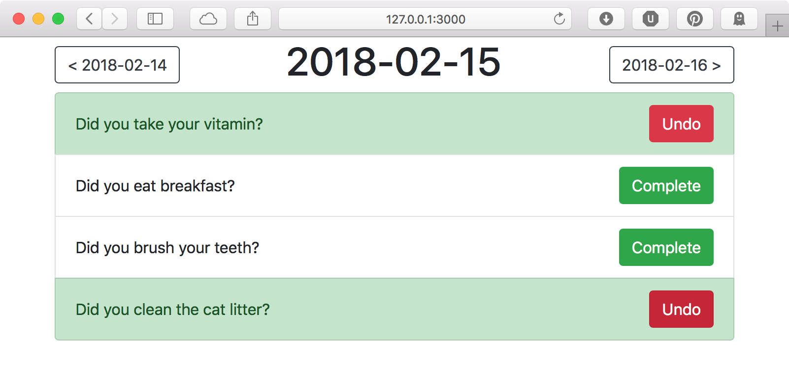

Todo App - Yancy Tutorial
This tutorial shows how to get started using the Mojolicious web framework with the Yancy content management system. The tutorial walks through starting a new Mojolicious application in a development environment using Carton, setting up a Postgres database with Mojo::Pg, configuring and using Yancy to manage content, and building a basic To-Do list web application.
Introduction
I want to build an app that helps me remember the little things I should be doing. It should be able to:
- Store a list of to-do items with different time periods and frequencies
- List all of the items that could be done today
- Allow clicking a button to complete the item
I should be able to navigate between days to see what I have to do tomorrow, or fix something I missed yesterday.

Prerequisites
This tutorial assumes that you already have Perl 5 installed on your system. Mojolicious requires at least Perl 5.10, which is included by default in most Linux distributions. See learn.perl.org for help installing Perl
Once you have Perl installed, you should also install the Carton module from CPAN. See Modern Perl for help installing CPAN modules
This tutorial assumes you have some basic Perl knowledge. Perl.org has free online books for learning Perl no matter your programming skill level. I recommend Beginning Perl if you are just starting out in programming, and Modern Perl or Impatient Perl if you have experience with other programming languages.
You should be able to run commands from a command-line. This is how we'll run the application we build.
Chapters
- Set up a development environment
- Start a new Mojolicious application
- Build the application schema
- Add and configure Yancy
- Populate the recurring to-do data
- Display the to-do list
- Mark to-do items as completed
- Navigate between dates -- Up next
- Design a UI with Bootstrap -- In progress
- Write tests with Test::Mojo -- Not started
- Configure and Deploy -- Not started